第04讲 思想方法专题：线段与角计算中的思想方法
(4类热点题型讲练)
目录
【考点一 分类讨论思想在线段的计算中的应用】 1
【考点二 分类讨论思想在角的计算中的应用】 6
【考点三 整体思想及从特殊到一般的思想解决线段和差问题】 12
【考点四 整体思想及从特殊到一般的思想解决角和差问题】 18
【考点一 分类讨论思想在线段的计算中的应用】
例题：（23-24七年级下·四川成都·开学考试）已知线段 ，直线
，直线 上有一点
上有一点 ，且
，且
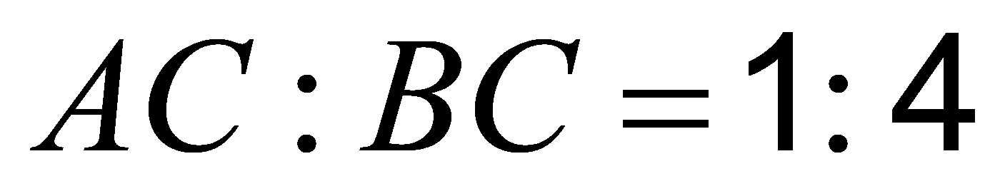
， 为
为 的中点，则
的中点，则 的长为
的长为 【答案】27或35
【知识点】线段中点的有关计算、线段的和与差
【分析】根据题意可分当点C在线段上和点C在线段外，且在点A的左边，然后根据线段的中点及线段的和差可进行求解．
本题主要考查线段的和差及线段中点的性质，熟练掌握线段的和差及线段中点的性质是解题的关键．
【详解】解：①如图，
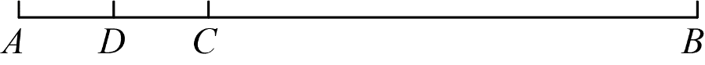
线段，直线上有一点，且，
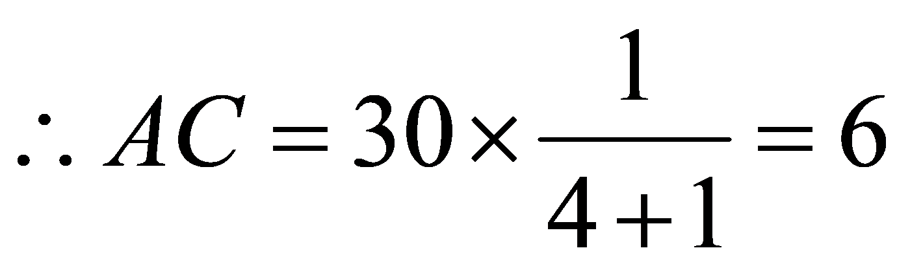
，∵为的中点，
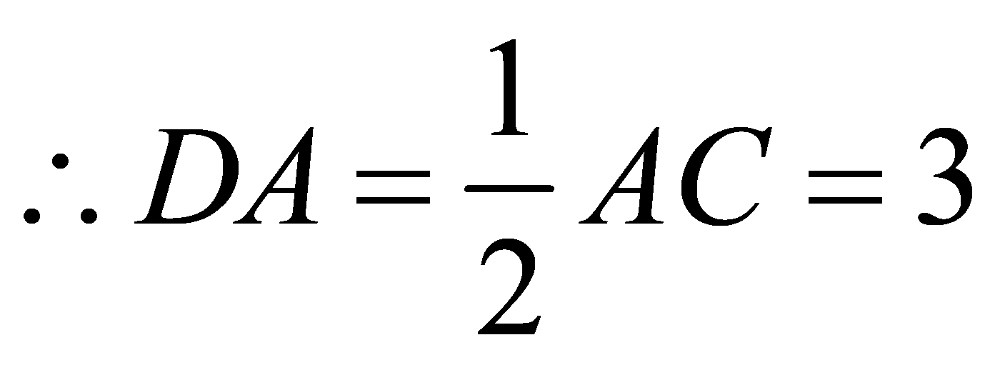
，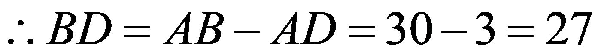
；②如图，
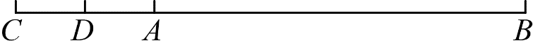
线段，直线上有一点，且，
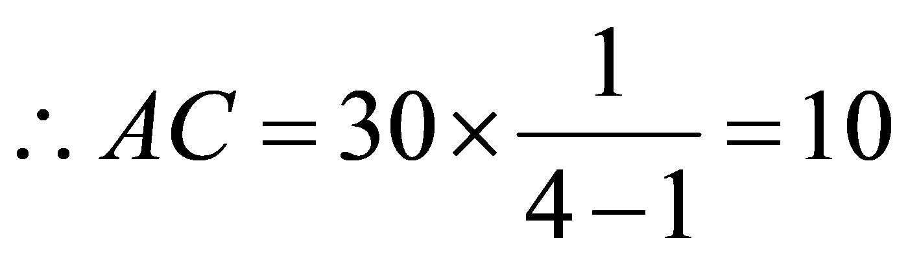
，∵为的中点，
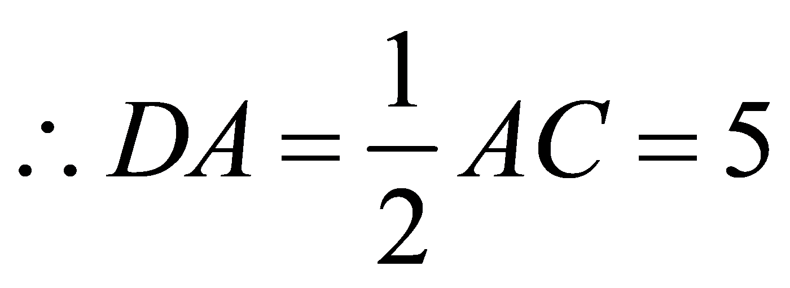
，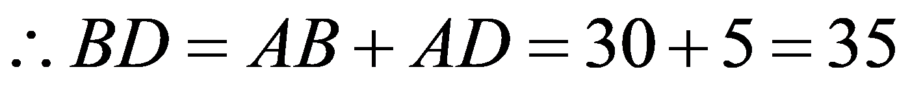
，综上所述，的长为27或35．
故答案为：27或35．
【变式训练】
1．（23-24七年级上·江苏徐州·期末）已知线段 ，点C在直线上，且
，点C在直线上，且
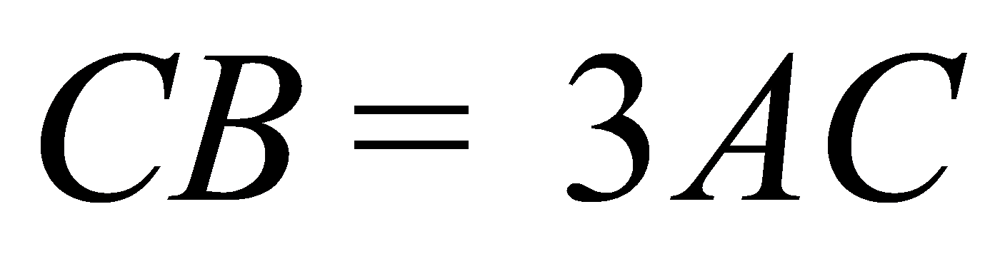
，点D是 的中点，则
的中点，则 ．
．【答案】
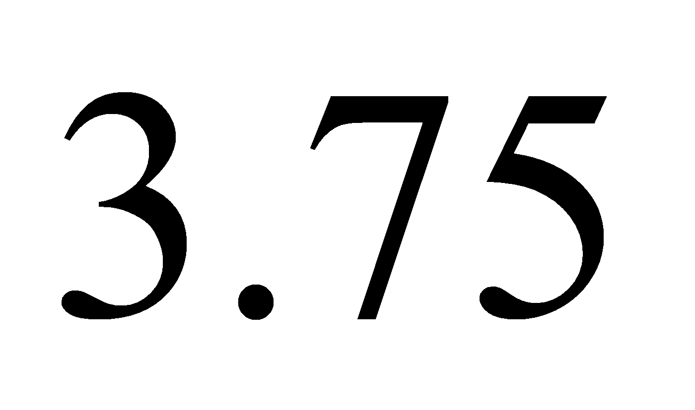
或
【知识点】线段中点的有关计算、两点间的距离、线段的和与差
【分析】本题考查的是线段的和差计算，线段中点的性质，灵活运用数形结合思想、掌握线段中点的性质是解题的关键．
分当点C在线段上和点C在线段的反向延长线上两种情况，根据线段中点的定义、结合图形进行计算即可．
【详解】如图1，当点C在线段上时，
∵
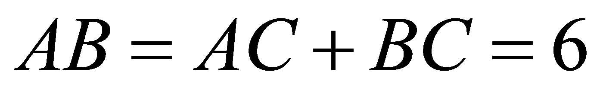
，，∴
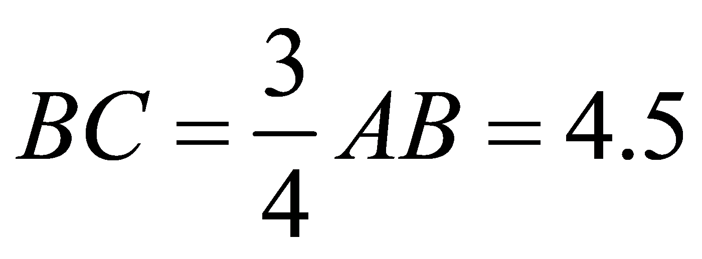
，∵点D为线段 的中点，
的中点，
∴
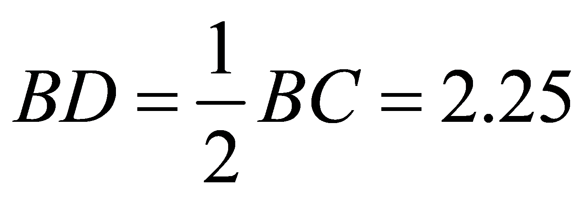
∴
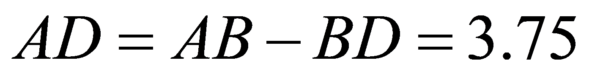
；如图2，当点C在线段的反向延长线上时，
∵
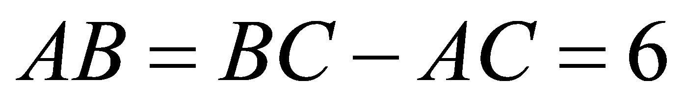
，，∴
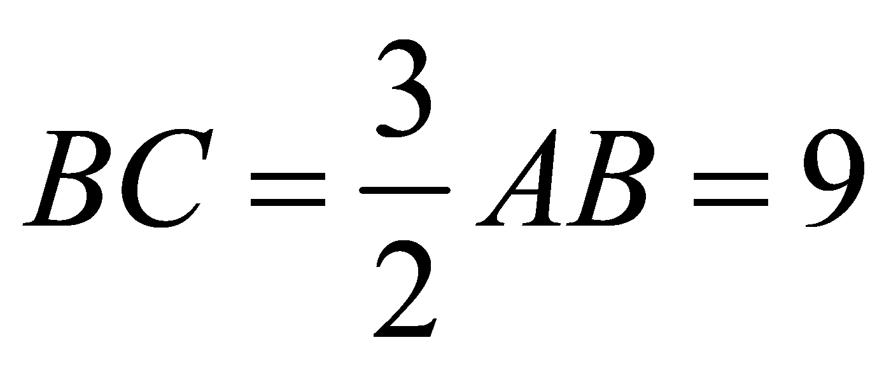
，∵点D为线段的中点，
∴
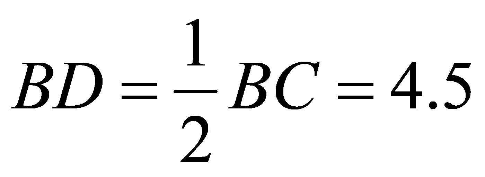
，∴，
综上所述，
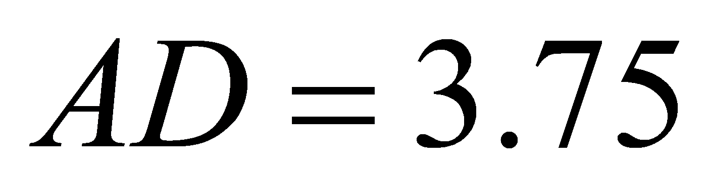
或．故答案为：或．
2．（23-24七年级上·北京·期末）已知 是直线上的点，线段
是直线上的点，线段 ，
， ，
， 是线段
是线段 的中点，则线段
的中点，则线段 的长为 ．
的长为 ．
【答案】5或11
【知识点】线段中点的有关计算、线段的和与差
【分析】本题考查的是与线段中点有关的线段计算，掌握线段中点的定义、灵活运用分情况讨论思想是解题的关键．
分两种情况：（1）当点在线段上时，当点在线段的反向延长线上时，分别画出图形，结合图形利用线段和差求解即可．
【详解】解：（1）当点在线段上时，
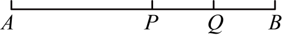
，又 ，，
，，
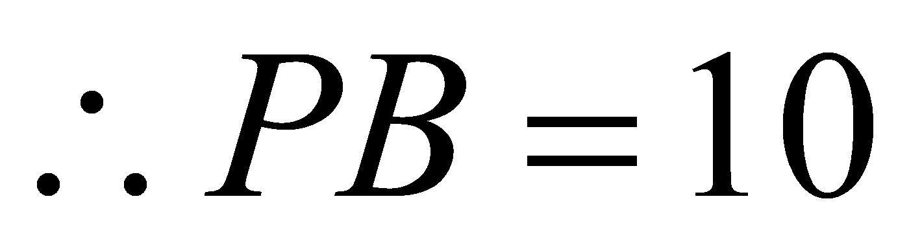
 点是线段的中点，
点是线段的中点，
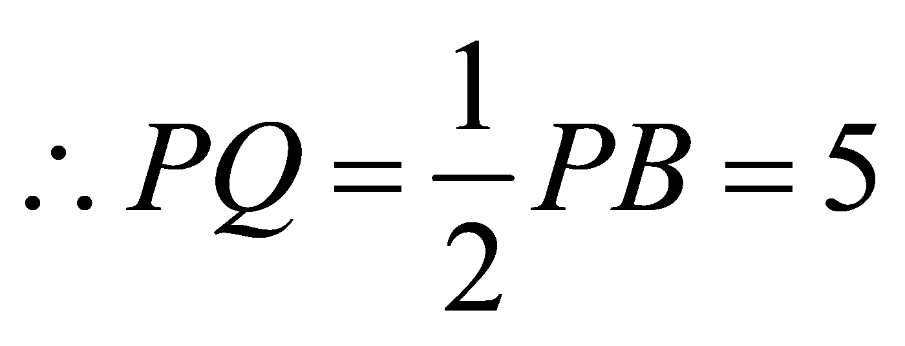
；（2）当点在线段的反向延长线上时，
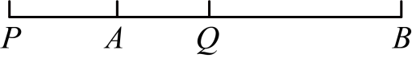
，又，，
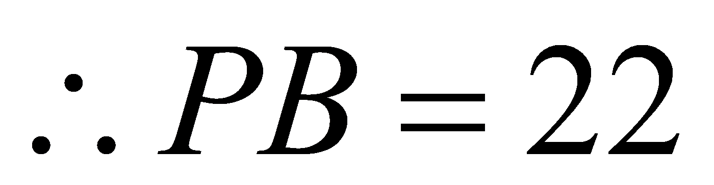
点是线段的中点，
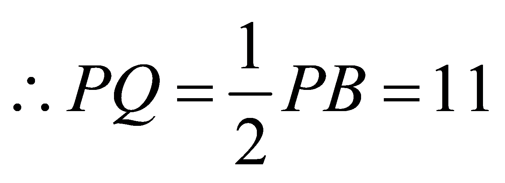
．综上，的长为5或11．
故答案为：5或11．
3．（23-24七年级下·山东日照·开学考试）已知 三点在同一直线上，线段
三点在同一直线上，线段 是线段的中点，且
是线段的中点，且 ，则线段
，则线段 的长等于 ．
的长等于 ．
【答案】或
【知识点】线段中点的有关计算、线段的和与差
【分析】本题考查了线段的中点运算以及线段的和差运算，分类讨论且结合图形进行列式计算，即可作答．
【详解】解：∵三点在同一直线上，线段是线段的中点，
∴
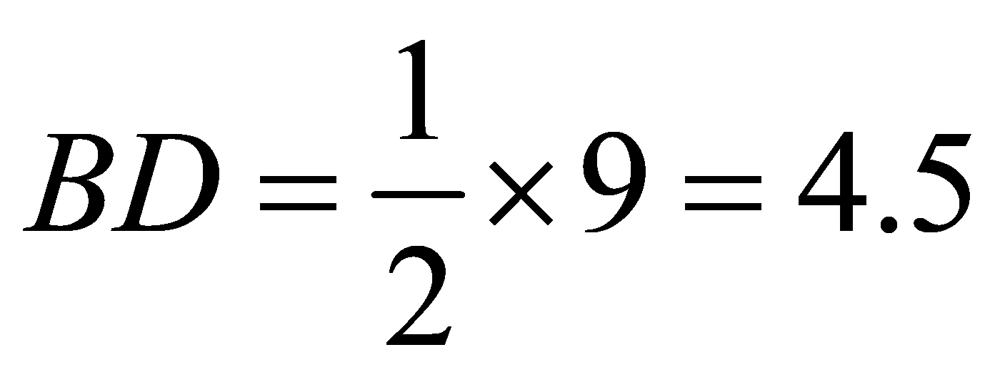
∵，
∴
如图：
∴
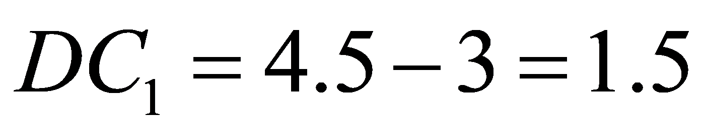
或
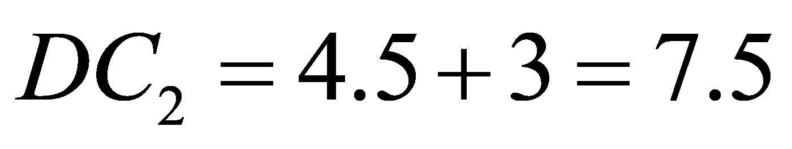
故答案为：或
4．（23-24七年级上·广东揭阳·阶段练习）如图，有公共端点P的两条线段 ，
， 组成一条折线
组成一条折线 ，若该折线上一点Q把这条折线分成相等的两部分，我们把这个点Q叫做这条折线的“折中点”．已知点D是折线
，若该折线上一点Q把这条折线分成相等的两部分，我们把这个点Q叫做这条折线的“折中点”．已知点D是折线 的“折中点”，点E为线段的中点，
的“折中点”，点E为线段的中点， ，
，
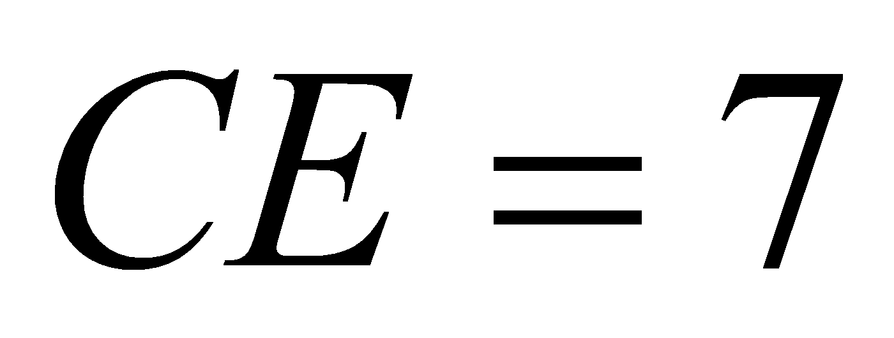
，则线段的长为 ．
【答案】4或24
【知识点】线段中点的有关计算、线段的和与差
【分析】本题主要考查两点间的距离，熟练掌握分类讨论的思想是解题的关键．根据“折中点”的定义分情况求出的长度即可．
【详解】①如图，，，
∵点D是折线的“折中点”，
∴，
∵点E为线段的中点，
∴
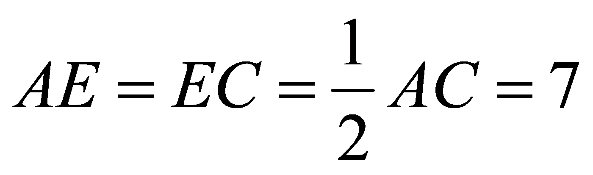
∴
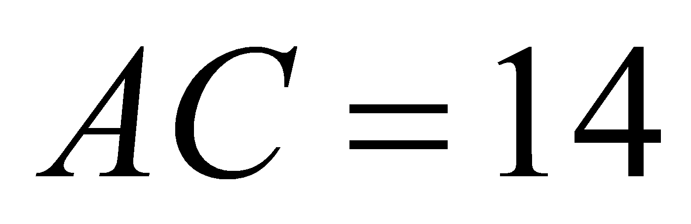
，∴
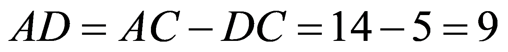
，∴
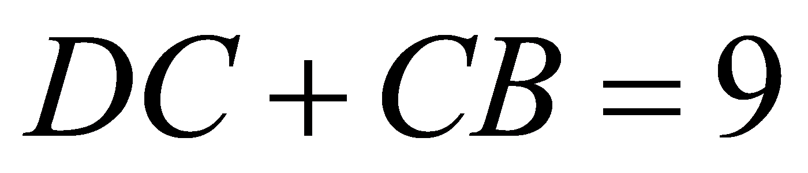
，∴
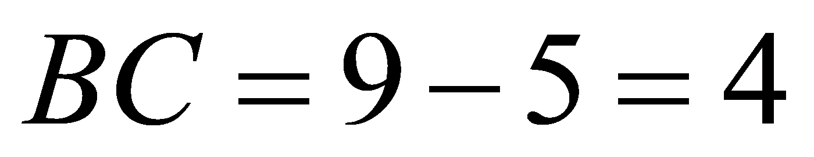
；如图，，，
∵点D是折线的“折中点”，
∴，
∵点E为线段的中点，
∴
∴，
∴
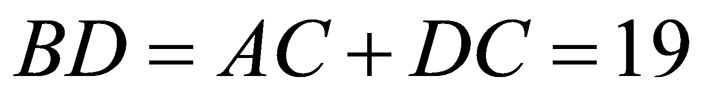
，∴
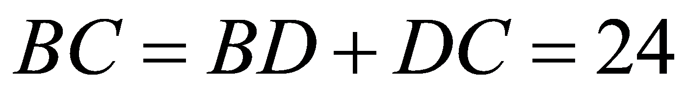
；综上所述，的长为4或24，
故答案为：4或24．
5．（23-24七年级上·湖北随州·期末）如图，线段的长为 ，点为线段的中点，为线段上一点，且
，点为线段的中点，为线段上一点，且
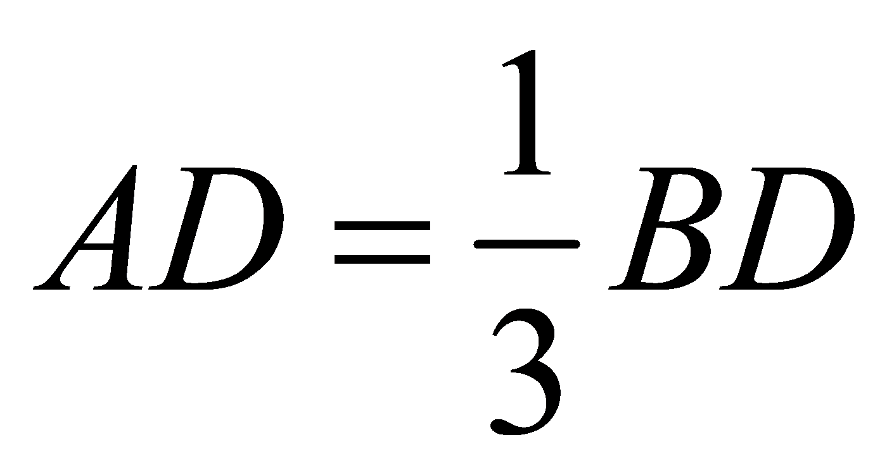
．图中共有 条线段；若为直线上一点，且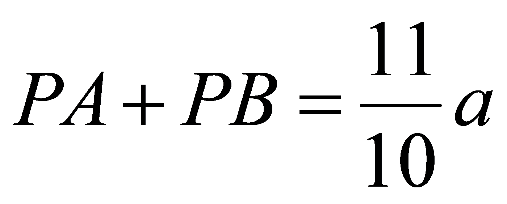
，则 的值为 ．
的值为 ．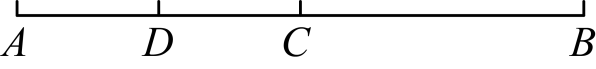
【答案】 6  或
或
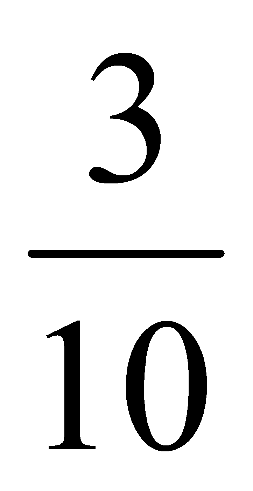
【知识点】线段之间的数量关系、线段中点的有关计算、两点间的距离、线段的和与差
【分析】本题主要考查了线段的数量问题、线段的中点的性质、线段的和差等知识点，明确各线段间的关系成为解题的关键．
先根据线段的定义写出所有的线段，然后统计条数即可解答；分点P在的延长线上和点P在 的延长线上两种情况，分别运用线段的和差关系即可解答．
的延长线上两种情况，分别运用线段的和差关系即可解答．
【详解】解：图中的线段有：共6条线段，
故答案为：6；
∵点为线段的中点，为线段上一点，且，
∴
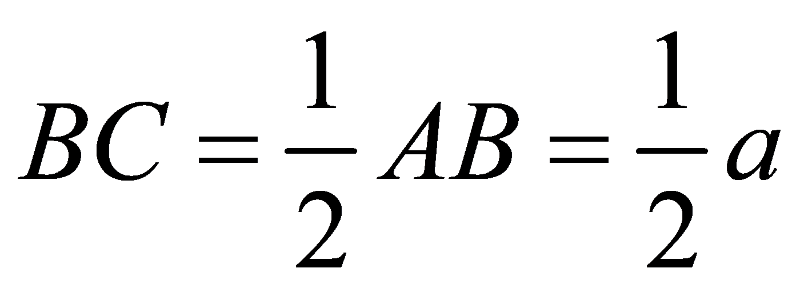
，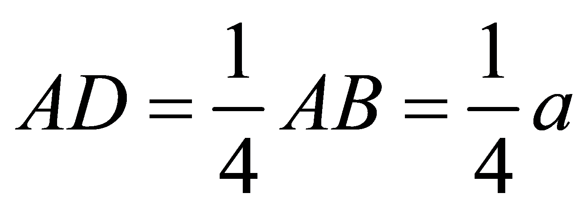
∵
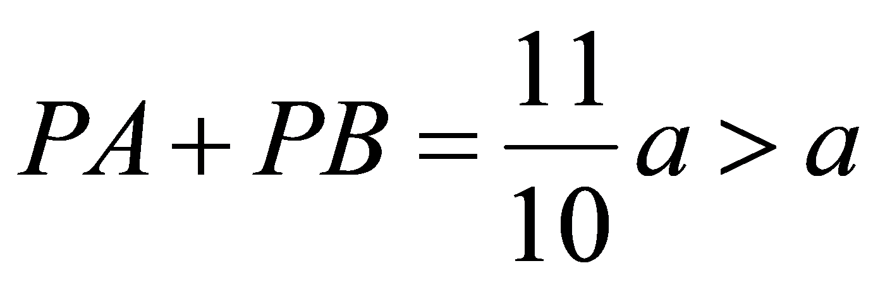
，∴点P在的延长线上和点P在的延长线，
如图:当点P在的延长线上时，则，
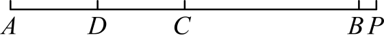
∵，
∴
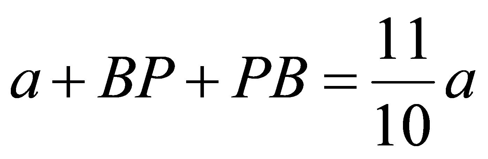
，解得：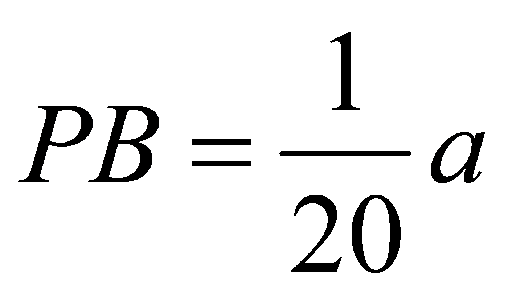
，∴,
∴
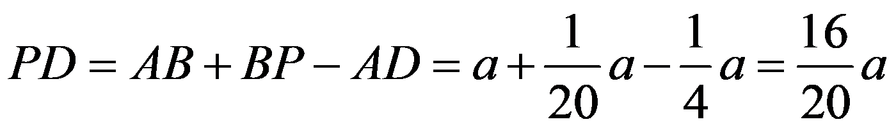
，∴
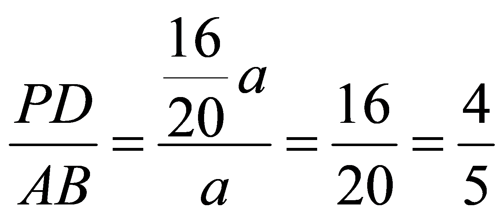
；如图:当点P在的延长线上时，则，
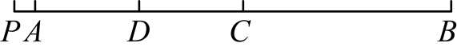
∵，
∴
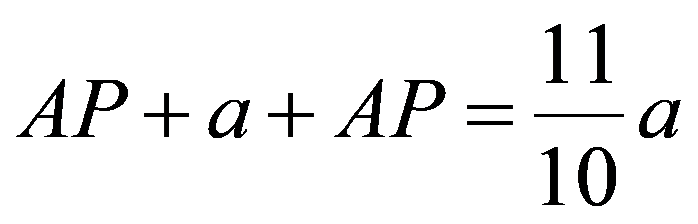
，解得：，∴,
∴，
∴．
故答案为：或．
【考点二 分类讨论思想在角的计算中的应用】
例题：（22-23七年级上·河南南阳·期末）已知 ，
， ，
， 平分
平分 ，
， 平分
平分 ，则
，则 ．
．
【答案】 或
或
【知识点】角平分线的有关计算
【分析】本题考查与角平分线有关的角的运算．分类讨论是解答此题的关键．
分射线 在内部和外部两种可能来解答．
在内部和外部两种可能来解答．
【详解】解：当射线在内部时，如图，
， 平分，
，
∵，平分，
∴，
；
当射线在外部时，如图，
， 平分，
，
∵，平分，
∴，
，
故答案为：或．
【变式训练】
1．（22-23七年级上·湖南湘西·期末）已知 ，过O点作射线，，使得，是
，过O点作射线，，使得，是 的平分线，则的度数为 ．
的平分线，则的度数为 ．
【答案】 或
或
【知识点】角平分线的有关计算、几何图形中角度计算问题
【分析】本题考查了角平分线的定义，角的和差，分当在外部时和当在内部时两种情况求解即可．
【详解】当在外部时，如图，
∵，，
∴．
∵是的平分线，
∴．
当在内部时，如图，
∵，，
∴．
∵是的平分线，
∴．
综上可知，的度数为或．
2．（23-24七年级上·四川绵阳·期末）已知 ，
， 平分平分
平分平分 ，则的度数是 ．
，则的度数是 ．
【答案】30°或
【知识点】角平分线的有关计算
【分析】本题考查了角平分线的有关计算，根据题意画出满足条件的两种情况即可求解．
【详解】解：如图所示：第一种情况如下图
∵，
∴
∵平分平分，
∴
∴
第二种情况如图
此时，
故答案为：30°或
3．（22-23七年级上·海南三亚·期末）已知，在同一平面内过点O作射线 平分
平分 ，平分的度数为 ．
，平分的度数为 ．
【答案】 或
或
【知识点】角平分线的有关计算
【详解】本题主要考查角平分线的定义，掌握角平分线的定义是解题的关键．根据角平分线的定义可得，分三种情况讨论，结合的度数可求解．
【解答】解：当射线在的内部时，如图，
∵射线平分，平分，
∴，
∵，
∴，
∵，
∴；
当射线在的外部且在射线 上方时，如图，
上方时，如图，
∵射线平分，平分，
∴，
∵ ，
，
∴；
当射线在的外部且在射线下方时，如图，
∵射线平分，平分，
∴，
，
，
，
；
综上， 的度数为或，
的度数为或，
故答案为：或．
4．（23-24七年级上·四川成都·期末）如图，点G为直线 上一点，
上一点， ，将
，将 绕点G逆时针旋转，当射线与射线重合时停止旋转；在旋转过程中，射线始终平分；当，三条射线中有一条是另外两条射线所成夹角的平分线时，
绕点G逆时针旋转，当射线与射线重合时停止旋转；在旋转过程中，射线始终平分；当，三条射线中有一条是另外两条射线所成夹角的平分线时， 的度数为 ．
的度数为 ．
【答案】或
【知识点】角平分线的有关计算
【分析】本题考查与角平分线有关的计算，分平分和平分两种情况进行讨论求解即可．理清角度之间的和差关系，是解题的关键．
【详解】解：如图，当平分时：则：，
∵平分；
∴，
∵，
∴，
∴，
∴的度数为；
当平分时，则：，
∵平分；
∴，
∴，
∴，
∴；
综上：的度数为或；
故答案为：或．
5．（23-24六年级下·山东烟台·期中）如图，已知是内部的一条射线，图中有三个角：，和，当其中一个角是另一个角的两倍时，称射线为的“巧分线”．如果 ，是
，是 的“巧分线”，则
的“巧分线”，则 的度数为 ．
的度数为 ．
【答案】或或
【知识点】角平分线的有关计算
【分析】本题考查了角的定义和巧分线定义，正确理解“巧分线”的定义是解题的关键．
分3种情况，根据巧分线定义即可求解．
【详解】解：∵，是的“巧分线”，
则由“巧分线”的定义可知有三种情况符合题意：
① ，此时；
，此时；
②，此时；
③，此时 ；
；
∴的度数为或或．
故答案为：或或．
【考点三 整体思想及从特殊到一般的思想解决线段和差问题】
例题：（23-24七年级上·全国·单元测试）A，B 两点在数轴上的位置如图所示，其中点 A 对应的有理数为 ，且
，且 ．动点 P 从点 A 出发，以每秒2个单位长度的速度沿数轴正方向运动，设运动时间为t秒（t
．动点 P 从点 A 出发，以每秒2个单位长度的速度沿数轴正方向运动，设运动时间为t秒（t ）．
）．

(1)当 时，
时， 的长为 ，点 P 表示的有理数为 ；
的长为 ，点 P 表示的有理数为 ；
(2)当 时，求t的值；
时，求t的值；
(3)M为线段的中点，N 为线段 的中点．在点 P 运动的过程中，线段 的长度是否发生变化？若变化，请说明理由；若不变，求出线段的长．
的长度是否发生变化？若变化，请说明理由；若不变，求出线段的长．
【答案】(1)2， ；
；
(2) 或
或 ；
；
(3)
【知识点】线段的和与差、线段中点的有关计算、数轴上两点之间的距离
【分析】本题主要是考查数轴上两点之间的距离，线段的和差运算和线段的中点的定义，只要能够画出图形就可以轻松解决，但是要注意考虑问题要全面．
（1）根据点P的运动速度，即可求出；
（2）当时，要分两种情况讨论，点P在点B的左侧或是右侧；
（3）分两种情况结合中点的定义可以求出线段的长度不变．
【详解】（1）解：因为点 P 的运动速度每秒2个单位长度，
所以当时，的长为2，
因为点 A 对应的有理数为， ，
，
所以点P表示的有理数为；
（2）解：当 ，要分两种情况讨论，
，要分两种情况讨论，
点P在点B的左侧时，因为，所以 ，所以；
，所以；
点P在点B的是右侧时， ，所以；
，所以；
（3）解：MN长度不变且长为5．
理由如下：当在线段上时，如图，
∵M为线段 的中点，N 为线段的中点，
∴， ，
，
∴ ，
∵，
∴．
当在线段的延长线上时，如图，
同理可得： ；
；
综上：．
【变式训练】
1．（23-24七年级上·辽宁铁岭·阶段练习）如图，已知点在线段上，点 分别是
分别是 的中点．
的中点．
(1)若 ，求线段的长；
，求线段的长；
(2)若点为线段上任一点，其它条件不变，你能猜想线段与的数量关系吗？并说明你的理由；
(3)若点在线段的延长线上，其它条件不变，你上述猜想的结论是否仍然成立？请画出图形，直接写出你的结论．
【答案】(1)
(2) ；理由见解析
；理由见解析
(3)成立；理由见解析
【知识点】线段中点的有关计算、线段的和与差
【分析】本题考查了线段的和差，利用中点性质转化线段之间的倍分关系是解题的关键，在不同的情况下灵活选用它的不同表示方法，有利于解题的简洁性．同时，灵活运用线段的和、差、倍、分转化线段之间的数量关系也是十分关键的一点．
（1）根据“点M、N分别是的中点”，先求出 、
、 的长度，再利用即可求出的长度即可；
的长度，再利用即可求出的长度即可；
（2）当C为线段上一点，且M，N分别是的中点，可表示线段、的长度，再利用，则；
（3）点C在的延长线上时，根据M、N分别为 的中点，即可求出
的中点，即可求出 的长度．
的长度．
【详解】（1）解：∵ ，点M是的中点，
，点M是的中点，
∴，
∵ ，点N是的中点，
，点N是的中点，
∴ ，
，
∴ ，
，
∴线段的长度为5；
（2）解：．理由如下：
∵M是的中点，N是的中点，
∴ ，，
，，
∴；
（3）解：成立，理由如下：
当点C在线段的延长线时，如图：
则 ，
，
∵M是的中点，
∴，
∵点N是的中点，
∴，
∴．
2．（22-23六年级下·山东泰安·期中）（1）已知线段 ，点
，点 线段的中点，点
线段的中点，点 是线段的中点，求：
是线段的中点，求：
①如图1，若点为线段上任意一点，求线段的长度；
②如图2，若点为线段延长线上任意一点，线段的长度会发生变化吗？请说明理由．
（2）如图3，若点为线段延长线上一点，点线段的中点，点是线段上的一点，且．求： 的值．
的值．
【答案】（1）① ，②的长度不会发生变化，理由见解析；（2）
，②的长度不会发生变化，理由见解析；（2）
【知识点】线段中点的有关计算、线段的和与差
【分析】本题主要考查了有关线段中点的计算：
（1）①根据线段中点的定义，可得，即可求解；
②根据线段中点的定义，可得，即可求解；
（2）根据线段中点的定义，可得 ，再由，可得，即可求解．
，再由，可得，即可求解．
【详解】解：（1）①点、分别是线段、的中点，
，，
∴，
，
；
②的长度不会发生变化，理由：
点、分别是线段、的中点，
，，
∴，
，
；
（2）点是线段的中点，
，
，
，
∴，
，
．
3．（23-24七年级下·黑龙江大庆·开学考试）如图（1），已知点C在线段上，且 ．
．
(1)若，求线段的长；
(2)若点C为线段上任意一点，其他条件不变，且满足 ，求线段 的长；
，求线段 的长；
(3)如图（2），若点C为线段延长线上任意一点，其他条件不变，且满足 ，求线段的长．
，求线段的长．
【答案】(1)12
(2)
(3)
【知识点】线段的和与差、线段中点的有关计算
【分析】本题主要考查了线段的和差计算：
（1）先求出 ，，再根据
，，再根据 进行求解即可；
进行求解即可；
（2）先求出，再根据进行求解即可；
（3）先求出 ，再根据进行求解即可．
，再根据进行求解即可．
【详解】（1）解：∵，，
∴，，
∴ ；
；
（2）解：∵，，
∴；
（3）解：解：∵，，
∴．
4．（23-24七年级上·江苏盐城·阶段练习）【感悟体验】如图 ，三点在同一直线上，点在线段的延长线上，且
，三点在同一直线上，点在线段的延长线上，且 ，请仅用一把圆规在图中确定点的位置．
，请仅用一把圆规在图中确定点的位置．
【认识概念】在同一直线上依次有 四点，且，那么称与互为“对称线段”，其中为的“对称线段”，亦为的“对称线段”．
四点，且，那么称与互为“对称线段”，其中为的“对称线段”，亦为的“对称线段”．
如图 ，下列情形中与互为“对称线段”的是 （直接填序号）．
，下列情形中与互为“对称线段”的是 （直接填序号）．
 ；
；
 ；
； ．
．
【运用概念】如图 ，与互为“对称线段”，点为的中点，点为的中点，且
，与互为“对称线段”，点为的中点，点为的中点，且 ．
．
（1）若 ，求
，求 的长；
的长；
（2）若，求的长；
【拓展提升】如图 ，在同一直线上依次有四点，
，在同一直线上依次有四点， 且（为常数），点为的中点，点在上且
且（为常数），点为的中点，点在上且 ．是否存在
．是否存在 的值使得的长为定值？若存在，请求出的值以及这个定值（用含的代数式表示）；若不存在，请说明理由．
的值使得的长为定值？若存在，请求出的值以及这个定值（用含的代数式表示）；若不存在，请说明理由．
【答案】【感悟体验】画图见解析；【认识概念】 ；【运用概念】（1）
；【运用概念】（1） ，（2），【拓展提升】当
，（2），【拓展提升】当 时,为定值
时,为定值 ．
．
【知识点】线段中点的有关计算、线段的和与差
【分析】【感悟体验】 ：以点为圆心以长度为半径交直线于点 即可求解；
即可求解；
【认识概念】，故①不符合题意；  ，
， ，故
，故 不符合题意；
不符合题意； 设
设 ，则
，则 ，同理可得
，同理可得 ，即可求解；
，即可求解；
【运用概念】
设点 对应的数为，点对应的数为
对应的数为，点对应的数为 ，则点
，则点 ，对应的数为
，对应的数为 ，
， ，
，
则点对应的数为，点对应的数为 ，即可求解；
，即可求解；
【拓展提升】设点对应的数为： ，点对应的数为：
，点对应的数为： ，则点、对应的数分别为：，
，则点、对应的数分别为：， ，求出
，求出  ，即可求解；
，即可求解；
本题考查了几何变换，涉及到新定义、中点坐标公式的运用等，准确设定点所对应的数是解题的关键.
【详解】【感悟体验】：以点为圆心以长度为半径交直线于点
则点为所求点，如下图：
【认识概念】 ，故 不符合题意；
不符合题意；
，故不符合题意；
设 ，则，
同理可得：，故符合题意，
故答案为：；
【运用概念】设点对应的数为，点对应的数为，则点，对应的数为，，
则点对应的数为，点对应的数为，
（）当，即，则，
则 ，
，
（）当，即 ，
，
则 ，
，
【拓展提升】存在，理由：
设点对应的数为：，点对应的数为：，
则点、对应的数分别为：，，
则点对应的数为，
而，
则点对应的数为：  ，
，
则 ，
，
当时，为定值．
【考点四 整体思想及从特殊到一般的思想解决角和差问题】
例题：（24-25七年级上·黑龙江哈尔滨·阶段练习）【问题驱动】已知O是直线上的一点， ，
， 平分．
平分．
（1）如图1，若，求 的度数；
的度数；
（2）如图1，若 ，则的度数为______（用含有
，则的度数为______（用含有 的式子表示）不必说明理由；
的式子表示）不必说明理由；
【拓广探索】
（3）将图1中的 绕顶点O顺时针旋转至图2的位置，试探究和度数之间的关系，写出你的结论，并说明理由．
绕顶点O顺时针旋转至图2的位置，试探究和度数之间的关系，写出你的结论，并说明理由．
（4）将图1中的绕顶点O逆时针旋转至图3的位置，其它条件不变，若，则的度数为______（用含有的式子表示），不必说明理由．
【答案】（1） ；（2）；（3）
；（2）；（3） ，理由见解析；（4）
，理由见解析；（4）
【知识点】几何图形中角度计算问题、角平分线的有关计算
【分析】本题主要考查了角平分线的性质、旋转性质以及角的计算等知识点，灵活运用有关性质以及角的和差关系求角成为解题的关键．
（1）由已知可求出 ，再由、平分求出的度数即可；
，再由、平分求出的度数即可；
（2）由（1）得，从而用含a的代数式表示出的度数即可；
（3）由可得 ，再根据角平分线的定义以及角的和差关系解答即可；
，再根据角平分线的定义以及角的和差关系解答即可；
（4）根据角的和差关系以及角平分线的定义解答即可．
【详解】解：（1）∵，
∴，
∵平分，
∴ ，
，
又∵，
∴ ；
；
（2）由（1）得，，
 ，
，
．
故答案为：；
（3）．理由如下:
∵，
∴，
∵平分，
∴ ，
，
又∵，
∴ ，
，
∴ ；
；
（4）∵平分，

又∵，
 ．
．
故答案为：．
【变式训练】
1．（23-24七年级下·河北石家庄·开学考试）如图所示，已知 平分
平分 平分．
平分．
(1)如图， ___________；
(2)将绕O点向下旋转，使 ，其他条件不变，能否求出的度数？若能，求出其值，若不能，请说明理由；
，其他条件不变，能否求出的度数？若能，求出其值，若不能，请说明理由；
(3)若 ，仍然分别作
，仍然分别作 的平分线，，能否求出的度数？若能，求的度数；若不能，试说明理由．
的平分线，，能否求出的度数？若能，求的度数；若不能，试说明理由．
【答案】(1)45
(2)
(3)
【知识点】几何图形中角度计算问题、角平分线的有关计算
【分析】（1）根据角平分线的以求出 与
与 的度数，然后相减即可求出的度数；
的度数，然后相减即可求出的度数；
（2）根据（1）的求解思路，先利用角平分线的定义表示出与的度数，然后相减即可得到的度数；
（3）根据前两题的求解思路把具体数据换为、 ，然后整理即可得出规律．
，然后整理即可得出规律．
本题考查了角的计算，角平分线的定义，读懂题意，看懂题目图形找准解题思路是解题的关键，此类题目通常都是各小题都用同一个解题思路，所以准确确定思路比较关键．
【详解】（1）解：  ，
， ，
，
，
 平分，平分，
平分，平分，
，
，
；
（2）解：能．过程如下：
，，
，
、分别平分，，
，
，
；
（3）解：能．过程如下：
 ，
， ，
，
，
、分别平分，，
，
，
，
即
2．（22-23七年级上·辽宁鞍山·期末）如图，已知 ，，平分，平分．
，，平分，平分．
(1)求的度数．
(2)若将题干中的改为 ，其余条件不变，求的度数；
，其余条件不变，求的度数；
(3)若将题干中的改为（β为锐角），其余条件不变，求的度数．
(4)从前面的结果中，你能得出什么结论？
【答案】(1)
(2)
(3)
(4)
【知识点】几何图形中角度计算问题、角平分线的有关计算
【分析】本题主要考查了几何图形中角度的计算，角平分线的定义
（1）由已知结合图形可求得的度数，再由角平分线的定义可分别求得与的度数，再由角的差的关系即可得结果；
（2）分析与（1）相同；
（3）分析与（1）相同；
（4）设，（为锐角），余下与（1）相同．
【详解】（1）解：∵，，
∴，
∵平分，平分，
∴，，
∴ ；
；
故答案为：．
（2）解：∵，，
∴ ，
，
∵平分，平分，
∴，，
∴ ；
；
故答案为：．
（3）解：∵，，
∴，
∵平分，平分，
∴， ，
，
∴ ；
；
故答案为：．
（4）解：设，（为锐角），
∴ ，
，
∵平分，平分，
∴，，
∴．
3．（23-24七年级上·贵州六盘水·期末）如图①所示，，将直角三角板的直角顶点放置在O点，平分 ．
．
(1)若，则______， ______．
______．
(2)如果， ，试判断，的数量关系，并说明理由．
，试判断，的数量关系，并说明理由．
(3)如图②当直角三角板绕着O点顺时针旋转一定角度，使得在的内部，在的外部，若，，，是否还存在（2）中的数量关系，若存在，请说明理由，若不存在，请求出，的数量关系．
【答案】(1) ；
；
(2)；理由见解析
(3)不存在，此时，满足 ；理由见解析
；理由见解析
【知识点】角平分线的有关计算、几何图形中角度计算问题、三角板中角度计算问题
【分析】本题主要考查了结合图形中角的计算，角平分线的定义，解题的关键是数形结合，熟练掌握角平分线定义．
（1）先根据，求出，根据角平分线定义得出，然后求出结果即可；
（2）根据 ，，得出，根据角平分线定义得出
，，得出，根据角平分线定义得出 ，根据
，根据 ，即可得出答案；
，即可得出答案；
（3）根据，，得出，根据角平分线定义得出，根据，得出 ，即可得出结论．
，即可得出结论．
【详解】（1）解：∵，
∴，
∵平分，
∴，
∴ ，
， ，
，
∴ ；
；
（2）解：，理由如下：
∵，，
∴，
又∵平分，
∴，
∵且，
∴，
即．
（3）解：不存在，此时，满足；理由如下：
∵，，
∴，
又∵平分，
∴，
∵，，
，
即，
故．
4．（23-24七年级上·河南郑州·期末）综合与探究
【问题情境】
将一副三角尺按如图1所示位置摆放，三角尺 中，
中， ，
， ；三角尺
；三角尺 中，
中， ，
， ，
， ．分别作
．分别作 的角平分线
的角平分线 ．
．
【初步探究】
现将三角尺按照图2，图3所示的方式摆放，仍然是的角平分线．在图2中与 重合，在图3中与
重合，在图3中与 重合在一起．
重合在一起．
（1）计算：图2中 的度数为___________°，图3中的度数为___________°（直接写出答案）．
的度数为___________°，图3中的度数为___________°（直接写出答案）．
【深入探究】
（2）通过初步探究，请你猜想图1中的度数为___________°．
如果设 ，请求出图1中的度数．
，请求出图1中的度数．
【类比拓展】
（3）再将三角尺按照图4所示的方式摆放，仍然是的平分线．请你求出的度数．
【答案】（1） ，；（2）；60°；（3）
，；（2）；60°；（3）
【知识点】角平分线的有关计算、三角板中角度计算问题
【分析】本题主要考查角平分线的性质，几何中角度的计算，理解图示，掌握角度的和差运算，角平分线的性质是解题的关键．
（1）根据角平分线的性质可得 ，在图2中与重合，
，在图2中与重合， ；在图3中与重合在一起，；由此即可求解；
；在图3中与重合在一起，；由此即可求解；
（2），根据平分 ，得；根据平分
，得；根据平分 ，得
，得 ，再根据即可求解；
，再根据即可求解；
（3） ，根据角平分线可得
，根据角平分线可得 ，，再根据，即可求解．
，，再根据，即可求解．
【详解】解：（1）分别是的角平分线，
∴，
在图2中与重合，
∴，
∵
∴
 ；
；
在图3中与重合在一起，
∴ ，
， ，
，
∵
∴

；
故答案为：，；
（2）由（1）可得图1中， ，
，
故答案为：；
若，
，
 ，
，
 平分，
平分，
，
，
 ，
，
 平分，
平分，
，

 ；
；
（3）设，
，
 ，
，
平分，
，
，
，
平分，
，
 ，
，
．